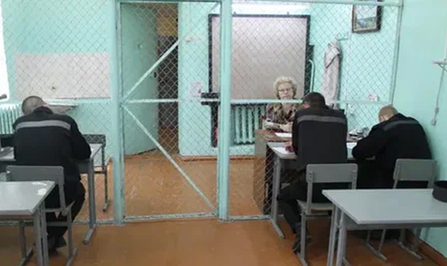
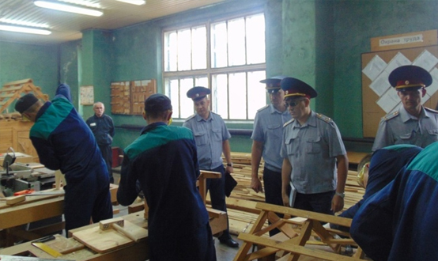

Обстоятельства, смягчающие наказание
Обстоятельствами, смягчающими ответственность (ст. 61 УК РФ), являются выходящие за пределы состава преступления объективные и субъективные признаки деяния, личности виновного, которые снижают степень общественной опасности преступного события либо лица, его совершившего.
Смягчающими обстоятельствами признаются:
а) совершение впервые преступления небольшой или средней тяжести вследствие случайного стечения обстоятельств (стрессовой ситуации, влияния взрослых и т.п.);
б) несовершеннолетие виновного;
в) беременность. Снижение наказания обусловливается тем, что беременность влечет за собой значительные психофизиологические изменения, повышает эмоциональную возбудимость, ослабляет контроль за поступками женщины. Кроме того, строгое уголовное наказание может повлечь неблагоприятные последствия для здоровья ребенка;
г) наличие малолетних детей у виновного. Смягчение наказания в этом случае также нацелено на защиту интересов детей, которые могут на какое-то время лишиться заботы со стороны родителя;
д) совершение преступления в силу стечения тяжелых жизненных обстоятельств (например, потери кормильца, смерти близкого родственника, серьезного заболевания, тяжелого материального положения и т.п.) либо по мотиву сострадания (например, убийство безнадежно больного, страдающего лица);
е) совершение преступления в результате физического или психического принуждения либо в силу материальной, служебной или иной зависимости;
ж) совершение преступления при нарушении условий правомерности необходимой обороны, задержания лица, совершившего преступление, крайней необходимости, обоснованного риска, исполнения приказа или распоряжения;
з) противоправность или аморальность поведения потерпевшего, явившегося поводом для преступления (например, измена супруга, предательство и пр.);
и) явка с повинной (добровольное заявление в правоохранительные органы о совершенном преступлении), активное способствование раскрытию и расследованию преступления, изобличению и уголовному преследованию других соучастников преступления, розыску имущества, добытого в результате преступления;
к) оказание медицинской и иной помощи потерпевшему непосредственно после совершения преступления, добровольное возмещение имущественного ущерба и морального вреда, причиненных в результате преступления, иные действия, направленные на заглаживание вреда, причиненного потерпевшему.
Перечень смягчающих обстоятельств не считается исчерпывающим, суд имеет право учитывать в качестве таковых и иные обстоятельства.
Главным последствием наличия смягчающих обстоятельств является сокращение срока или размера наказания: в отсутствие отягчающих обстоятельств срок или размер наказания не могут превышать двух третей максимального срока или размера наиболее строгого вида наказания, предусмотренного соответствующей статьей УК РФ (не распространяется на статьи, которыми предусмотрены пожизненное лишение свободы или смертная казнь).
Обстоятельства, отягчающие наказание
Под отягчающими обстоятельствами понимают выходящие за пределы состава преступления объективные и субъективные признаки деяния и личности виновного, которые повышают степень их общественной опасности.
Закон (ст. 63 УК РФ) содержит строго ограниченный перечень таких обстоятельств:
а) рецидив преступлений – он свидетельствует о том, что лицо не достигло исправления при отбывании предыдущего наказания и остается опасным для общества;
б) наступление тяжких последствий в результате совершения преступления (например, наступление психического расстройства, гибель случайных людей в результате преступления и т.п.);
в) совершение преступления в составе группы лиц, группы лиц по предварительному сговору, организованной группы или преступного сообщества (преступной организации). Общественная опасность групповых посягательств гораздо более высокая, поскольку процесс совершения преступления в данном случае облегчается тем, что участвующие в нем лица содействуют друг другу, объединяют усилия для тщательной подготовки к преступлению, достижения преступного результата и сокрытия следов преступления;
г) особо активная роль в совершении преступления (например, склонение соучастников к совершению преступления, разработка плана преступления и т.п.);
д) привлечение к совершению преступления лиц, которые страдают тяжелыми психическими расстройствами либо находятся в состоянии опьянения, а также лиц, не достигших возраста, с которого наступает уголовная ответственность;
е) совершение преступления по мотивам политической, идеологической, расовой, национальной или религиозной ненависти или вражды либо по мотивам ненависти или вражды в отношении какой-либо социальной группы;
ж) совершение преступления из мести за правомерные действия других лиц, а также с целью скрыть другое преступление или облегчить его совершение;
з) совершение преступления в отношении лица или его близких в связи с осуществлением данным лицом служебной деятельности или выполнением общественного долга (например, сотрудника правоохранительных органов, должностного лица общественной организации);
и) совершение преступления в отношении женщины, заведомо для виновного находящейся в состоянии беременности, а также в отношении малолетнего, другого беззащитного или беспомощного лица либо лица, находящегося в зависимости от виновного. Повышение степени общественной опасности в данном случае обусловлено тем, что потерпевший в силу различных обстоятельств лишен возможности защищать свою личность и законные интересы;
к) совершение преступления с особой жестокостью, садизмом (наслаждением чужими страданиями), издевательством (глумлением над потерпевшим, причинением ему особых моральных страданий), а также мучениями для потерпевшего (например, путем пыток, лишения пищи и сна в течение длительного времени);
л) совершение преступления с использованием оружия, боевых припасов, взрывчатых веществ, взрывных или имитирующих их устройств, специально изготовленных технических средств, наркотических средств, психотропных, сильнодействующих, ядовитых и радиоактивных веществ, лекарственных и иных химико-фармакологических препаратов, а также с применением физического или психического принуждения;
м) совершение преступления в условиях чрезвычайного положения, стихийного или иного общественного бедствия, а также при массовых беспорядках, в период мобилизации или военного положения, в военное время либо в условиях вооруженного конфликта или ведения боевых действий. В подобных обстоятельствах все внимание органов власти направлено на устранение последствий бедствия, что облегчает процесс совершения преступления;
н) совершение преступления с использованием доверия, оказанного виновному в силу его служебного положения или договора. Необходимость усиления наказания в данном случае продиктована тем, что виновный не оправдывает оказанного ему доверия, более того, использует его для совершения преступления. Здесь имеются в виду не только должностные лица, не только граждане, выполняющие управленческие функции в коммерческих и иных негосударственных организациях, но и рядовые работники, которым оказано доверие по службе, а также лица, доверительное отношение к которым формируется в силу договора;
о) совершение преступления с использованием форменной одежды или документов представителя власти. Использование указанных атрибутов значительно облегчает процесс совершения преступления, поскольку предоставляет виновному широкие полномочия и позволяет злоупотреблять доверием, которое испытывают граждане к представителям власти;
п) совершение умышленного преступления сотрудником органа внутренних дел;
р) совершение преступления в отношении несовершеннолетнего (несовершеннолетней) родителем или иным лицом, на которое возложены обязанности по содержанию, воспитанию, обучению и (или) защите прав и законных интересов несовершеннолетнего (несовершеннолетней), либо лицом, проживающим совместно с несовершеннолетним (несовершеннолетней), либо педагогическим работником или другим работником образовательной организации, медицинской организации, организации, оказывающей социальные услуги, либо иной организации, обязанным осуществлять надзор за несовершеннолетним (несовершеннолетней), либо иным лицом, осуществляющим трудовую деятельность в сфере образования, воспитания, развития несовершеннолетних, организации их отдыха и оздоровления, медицинского обеспечения, социальной защиты и социального обслуживания, в сфере детско-юношеского спорта, культуры и искусства с участием несовершеннолетних;
с) совершение преступления в целях пропаганды, оправдания и поддержки терроризма.
Суд, в зависимости от характера и степени общественной опасности преступления, обстоятельств его совершения и личности виновного, также может признать отягчающим обстоятельством совершение преступления в состоянии алкогольного или наркотического опьянения.